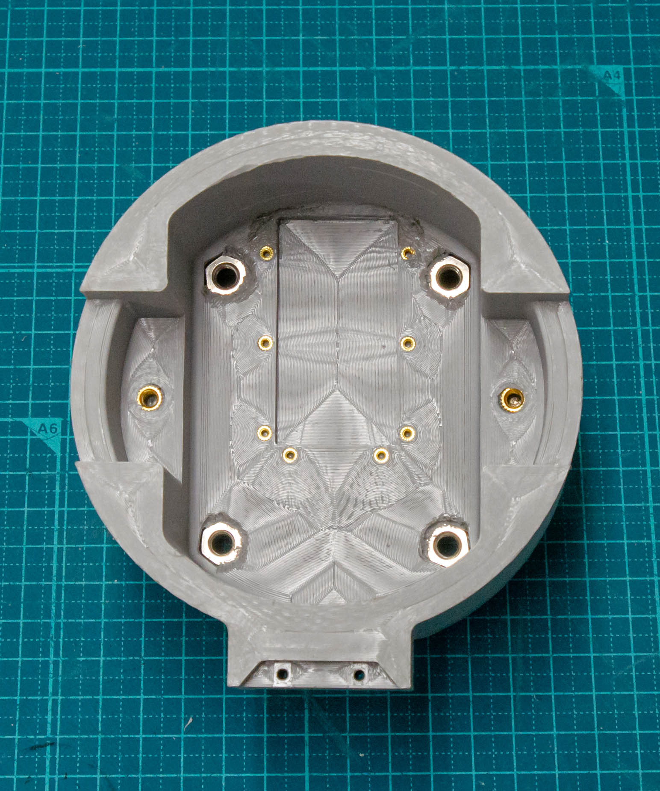
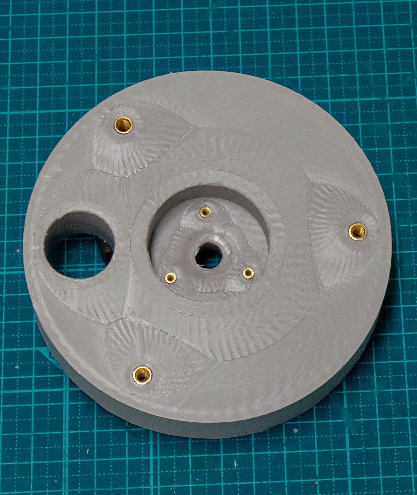
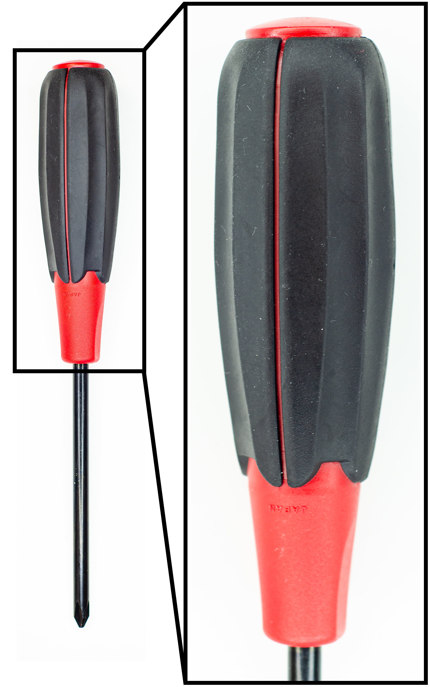
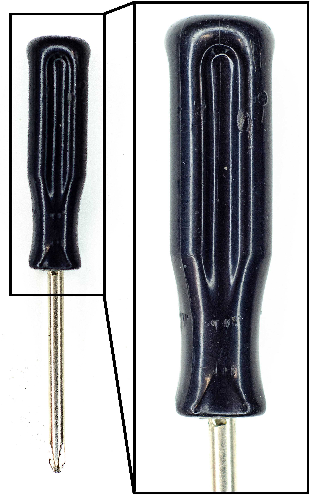
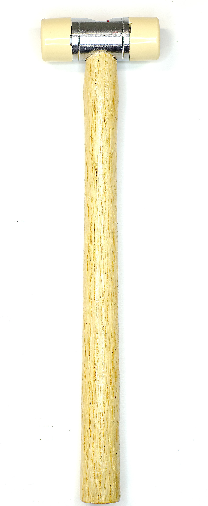
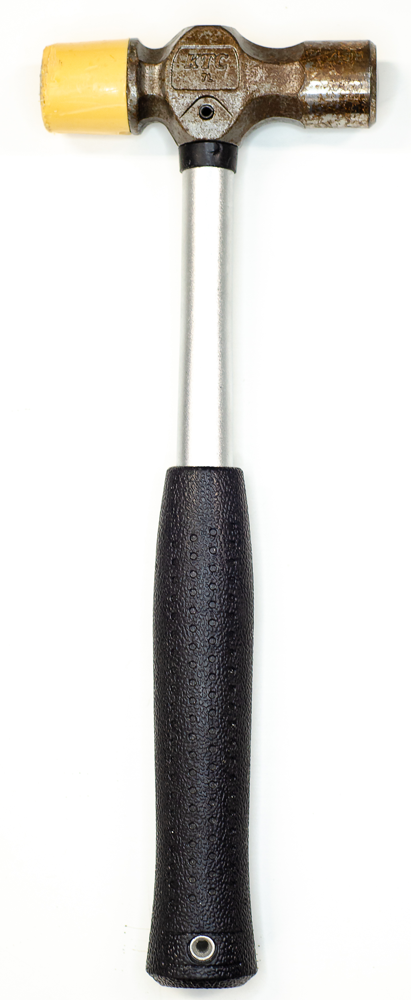
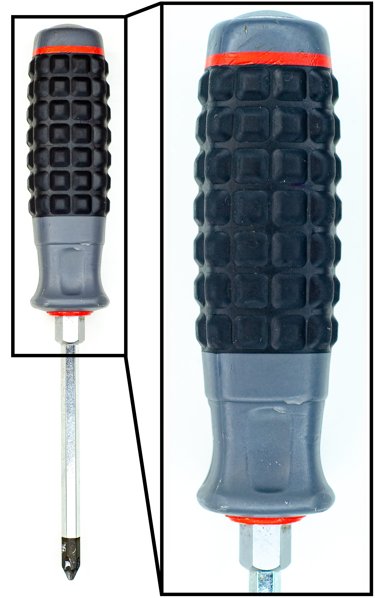

Design Instruction
Before starting assembly, we need to install threaded inserts into the 3D printed parts using a soldering iron, instructions on best practices are presented below.
Examples of inserts in ARTiS
 
Prepare all components (3D printed parts, Required Components, Other Misc. Parts and Tools) described below.

Screwdriver №2

Screwdriver №3

Screwdriver №4

Screwdriver №5

Screwdriver №6

Screwdriver №7

Screwdriver №8

Screwdriver №9

Drill №1

Drill №2

Hammer №1

Hammer №2

Screwdriver №1
Prepare all components (3D printed parts, Required Components, Other Misc. Parts and Tools) described below.
Screwdriver №2
Screwdriver №3
Screwdriver №4
Screwdriver №5
Screwdriver №6
Screwdriver №7
Screwdriver №8
Screwdriver №9
Drill №1
Drill №2
Hammer №1
Hammer №2
Screwdriver №1
Design Instruction
Assembly Time ~ 30-45 minutes
Prepare all components (3D printed parts, Required Components, Other Misc. Parts and Tools) described below.
Insert the 6 6mm hex nuts into the hex nut holes in the Top Housing.
Insert the 2 6mm shafts (41mm length) into both the Left and Right Crank gear holes leaving equal protruding shaft from the top and bottom of the crank.
On the Left Rocker’s top holes, attach the bottom two holes of the Coupler Link using 1 M4 x 35 screw and secure the other end using an 4mm hex nut. Do not overtighten.
Insert 1 torsion spring into the inside of the Coupler Link near the top.
Insert the other end of the torsion spring into the left Finger Tip torsion spring hole.
Align the mounting holes from the Finger Tip with the upper holes in the Left Rocker and the Coupler Link.
Insert an M4 x 35 screw into the aligned holes and secure the end with a 4mm nylon lock nut. Do not over tighten.
Insert the TPU Tip and TPU Finger extrusions into their designated holes on the Finger Tip.
Apply grip tape along the face of the of the TPU Tip and TPU Finger
Repeat steps 4-10 for the Right Crank.
Insert 2 M6 x 40 screws into the bottom of the Bottom Housing and into the left and right lower rocker holes.
Adjust the lower TPU Finger extrusions to overlap and sit between the two rocker screws.
Over top the lower TPU Finger extrusions, and rocker screws, insert the Inner Link Stopper Spacer with the bare side facing up on the screws and facing the crank gears.
All parts on the shaft should be up against each other but leave enough shaft protruding from both the top and bottom of the assembly to properly align the pinion gear with the crank gear.
Screw the Actuator Shaft Mounting Plate to the actuator with 4 M3 x 8 screws.
Making sure all shafts, bearings and screws align properly, and press the top and bottom housings together.
Tighten the two rocker screws from the bottom of the bottom housing (Do not overtighten) and bring all the parts together making sure all shafts press into the bearings.
Place the Motor Mount Case atop the actuator and align the 4 actuator holes with the holes on the case.
Screw 4 M3 x 6mm into the 4 holes
Align the extruding case holes with the extruding holes on the top housing and fasten them from the bottom using 2 M6 x 16 screws.
Lastly, place the Flange Adapter between the top and bottom housings near the rear and run 2 M6 x 45 screws through from the bottom of the bottom housing and tighten until the screw reaches the case’s hex nut.
Electronic Instruction
Instruction
Setup DYNAMIXEL Instruction Video
In "Power Source" page:
DC bus overvoltage: 26
DC bus undervoltage: 26
DC max positive current: 5
DC max nagative current: -5
In "Motor" Setup page:
Type: Gimbal
Phase resistance : 1.2
Pole pairs: 14
KV: 55
Current limit: 3.1
Motor calib. current: 3.1
Motor calib. voltage: 24
Lock-in spin current: 0.1
In "Encoder Paramater" page:
Type: SPI(AMS protocol)
nCS pin: GPIO17
In "Control mode" page
Control mode: Filtered Position Control
Position Setpoint: USB/UART/CAN
Bandwidth: 15
Soft velocity limit: 10
Hard velocity limit: 10
Torque limit: 0.6
1) Click "Erase & Reboot" button in Erease old configuration step
2) Click "Apply new configuration" button in Apply new configuration step
3) Click "Save & Reboot" button in Save to non-volatile memory step
4) Click "Run Calibration Sequence" button in Calibrate step and wait until calibration is done
5) Click "Save & Reboot" button in Save to non-volatile memory step
Change the Position Gain, velocity Gain and velocity Integrator Gain as below.
(This is the empirical value. You can find the better tuning values by modifying those.)
Position Gain: 20
Velocity Gain: 0.3
Velocity Integrator Gain: 0.333